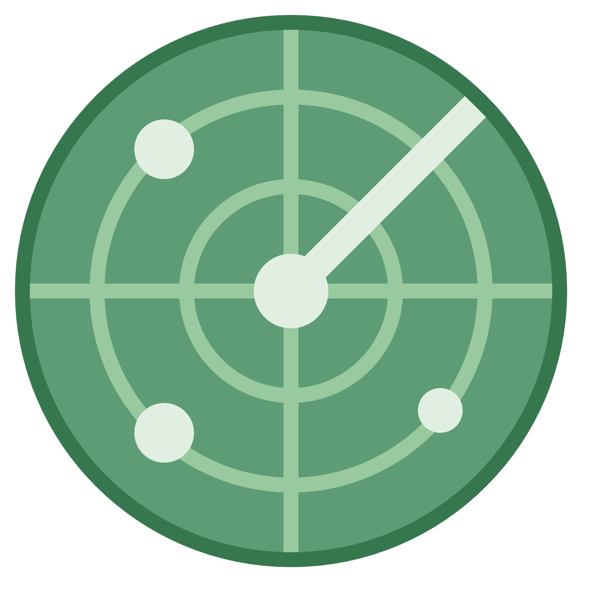

<!-- <div id="custom-overlay" [style.display]="splash ? 'flex': 'none'">
  <div class="flb">
    <div class="Aligner-item Aligner-item--top"></div>
    
    
    <div class="Aligner-item Aligner-item--bottom"></div>
  </div>
</div> -->

<ion-header>
  <ion-toolbar color="primary">
    <ion-title>RECIPES</ion-title>
  </ion-toolbar>
</ion-header>

<ion-searchbar showCancelButton="always"></ion-searchbar>

<ion-content>
  <ion-grid>
    <ion-row>
      <ion-col size-lg='3' size-md='4' size-sm='6' size='12' *ngFor="let recipt of recipes" >
<ion-card> 
  
  <ion-card-header>
    <ion-card-title>{{recipt.recipe.label}}</ion-card-title>
  </ion-card-header>

</ion-card>

</ion-col>
</ion-row>
</ion-grid>

</ion-content>

